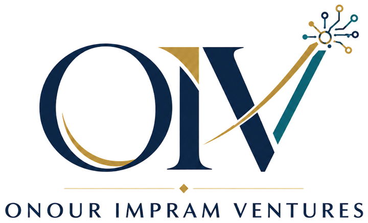
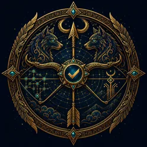

Araştırma
Yapay zekâ ve açık kaynak
Kanıtı kayda geçen değerlendirme
Ürün ve danışmanlık
Yazılım ve eğitim
Uygulamalar, kurslar ve kitaplar
- İngiltere ve Galler'de tescilli
- Şirket No. 17429906
- Apache 2.0 ile açık kaynak
- Google Play'de uygulamalar
- Türkçe ve İngilizce danışmanlık

Açık kaynak, araştırma ve değerlendirme
-

-

Apache 2.0
Mergen
Bir "bitti" iddiasını deponun kendisiyle yeniden sınar. Ajan işin bittiğini söyler; Mergen diff'i, testleri ve artefaktları okur, iddianın gerçekte neye dayandığını raporlar. "Bitirdim" ile "bitti" arasındaki boşluk için yapıldı.
Şirketin kendi yapay zekâ ajanları için kurulup sonra paylaşıldı. Yerel öncelikli, düz dosya, tedarikçiye bağımlılık yok; ikisi de Apache 2.0 lisanslı ve ikisi de şirkette her gün kullanılıyor.
Araştırma ve değerlendirme
Şirketin araştırma hattı davranış bilimiyle yapay zekâ sistemlerinin kesiştiği yerde durur: insanlar bu sistemleri gerçekte nasıl kullanıyor, güven nerede hak ediliyor, nerede taklit ediliyor ve aradaki fark nasıl ölçülür. Şirketin hizmet olarak sattığı şey bu araştırma disiplinidir.
Değerlendirme. Modellerin ve ajan sistemlerinin kalite, güvenlik ve dayanıklılık testleri; kıyaslama (benchmark) ve protokol tasarımı; kanıtı kayda geçirilen uzman incelemesi. Savunabilecekleri bir yanıta ihtiyaç duyan ekipler için.
Yönetici ayrıca Avrupa Psikologlar Dernekleri Federasyonu'nun Project 13 uzman çalışma grubunda görev alıyor.
Klinik uygulama şirketten ayrıdır ve şirket üzerinden sunulmaz.
Uygulamalar, danışmanlık ve yayıncılık
Şirketin kendi adıyla tasarladığı ve geliştirdiği mobil uygulamalar. Satın almalar mağazanın kendi ödeme altyapısından geçer; şirket hiçbir kart numarası görmez.
Google Play'de
-
 CatPulse uygulamasını Google Play'de aç
CatPulse uygulamasını Google Play'de aç
Kedinin sağlığı, beslenmesi, kilosu ve veteriner ziyaretleri tek zaman çizelgesinde.
-
DogPulse uygulamasını Google Play'de aç
Aynı bakım kaydı, köpekler için yazıldı.
Google Play'e gönderildi
-
GraceRhythm
Okuyanın hangi gelenekten dua ettiğini gözeten günlük dua yoldaşı.
Yasal: GraceRhythm -

ADHDFlow
Kısa odak bloklarının üstüne kurulmuş bir iş günü planlayıcısı.
Yasal: ADHDFlow -
Clocktopus
Odak alışkanlıkları üzerine kısa dersler; her biri küçük bir hamleyle biter.
Yasal: Clocktopus -
Kinlore
Sonra gelenler için saklanan aile hikâyeleri.
Yasal: Kinlore
Danışmanlık, eğitim ve yayıncılık
Danışmanlık ve eğitim. Kurumlar için yapay zekâ stratejisi ve ürün muhakemesi; araştırma yöntemi ve kanıt sentezi; atölyeler, kurslar ve mesleki eğitim, Türkçe ve İngilizce.
Yöneticinin 2026'da iki kitabı yayımlandı: biri ruh sağlığında üretken yapay zekâ, biri pozitif psikoloji üzerine.


Onour Impram Ventures, Londra'da tescilli, kurucusunun yönettiği bir teknoloji ve araştırma şirketi. Tek yönetici, dışarıdan yatırımcı yok ve yayımladığı her şeyde aynı kural: iddia, sınanmaya dayanmak zorunda.
Şirket sicili
- Tescilli unvan
- ONOUR IMPRAM VENTURES LTD
- Şirket numarası
- 17429906
- Tescil yeri
- İngiltere ve Galler
- Şirket türü
- Limited şirket
- Tescil tarihi
- 1 Eylül 2026
- D-U-N-S
- 235117532
- SIC kodları
- 62012 · 58290 · 70229 · 85590
- Kayıtlı ofis
- 71-75 Shelton Street, Covent Garden, London WC2H 9JQ, Birleşik Krallık
- Yönetici
- Onour Impram, tek yönetici ve pay sahibi
- Kamu kaydı
- Companies House
İletişim
Ticari, mağaza ve uyum yazışmaları şirkete onour@onourimpram.com adresinden, posta yoluyla da kayıtlı ofisten ulaşır.
Tek bir uygulamaya dair destek talepleri de aynı adresten yanıtlanır. Konu satırına uygulamanın adını yazarsanız mesajınız doğru yere daha çabuk ulaşır. Lütfen e-postayla ödeme kartı bilgisi ya da sağlık bilgisi göndermeyin.
Yöneticinin mesleki sitesi: onourimpram.com.